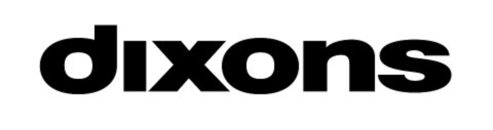

홈 > 브랜드 매거진 > Dixons
Dixons
딕슨스(Dixons)는 1937년 영국에서 출발한 가전 소매 브랜드로 현재는 Currys로 통합돼 매장 브랜드로는 폐지되었다.
산업 분야 리테일·커머스 · 공개 등급 자료 기반 · 브랜드 평가 4.1 ★

한눈에 보는 브랜드
딕슨스는 1937년 영국 사우스엔드온시에서 찰스 칼름스가 사진관으로 출발시킨 영국의 가전·전자제품 소매 브랜드다. 1950년대 사진장비 판매로 업태를 전환하고 1962년 증권거래소에 상장하면서 본격적인 전국 체인으로 성장했다.
전성기에는 600개가 넘는 매장을 거느리며 영국 가전 시장의 약 5분의 1을 점유한 최대 전자 소매업체였다. 그러나 2006년 오프라인 간판이 커리스로 교체되고 2021년 모기업이 커리스 단일 브랜드로 통합되면서 90년 가까운 이름은 역사 속으로 들어갔다.
브랜드 관점
딕슨스의 핵심 경쟁력은 극동 직거래와 대량 매입으로 가격을 낮춘 박리다매, 그리고 프린츠·사이쇼·마쓰이로 이어지는 자체 브랜드 전략이었다. 일본산 이미지를 입힌 마쓰이처럼 저가 자체 라벨로 마진을 확보하고, 사진에서 가전, 다시 컴퓨터로 성장 시장을 차례로 선점하는 방식이 성장 엔진이었다.
그러나 2000년대 들어 슈퍼마켓과 온라인의 가격 공세로 번화가 모델이 흔들리자, 모기업은 2006년 오프라인 간판을 더 친숙한 커리스로 바꾸고 딕슨스를 온라인 전용으로 축소했다가 2012년 사이트마저 닫았다. 2014년 카폰웨어하우스와 합병해 딕슨스카폰을 이루고 2021년 네 개 브랜드를 커리스 하나로 합친 결정은 인지도가 가장 높은 이름에 자원을 몰아주는 정리였다.
한국 독자에게는 여러 전자전문점 간판이 단일 대형 브랜드로 흡수돼온 국내 가전 양판 시장의 재편 과정과 겹쳐 읽힌다.
시작과 성장
제2차 세계대전 직전인 1937년, 런던 지하철 광고 영업을 하던 찰스 칼름스는 사진 스튜디오를 운영하던 마이클 민델과 손잡고 사우스엔드온시 하이스트리트에 첫 사진관을 열었다. 간판에 들어갈 수 있는 글자가 여섯 자뿐이어서 전화번호부에서 짧게 고른 이름이 '딕슨스'였다.
전쟁 중에는 가족 초상사진 수요로 호황을 누렸으나 종전 후 수요가 급감해 매장 대부분을 정리해야 했다. 첫 번째 전환점은 1948년 열여섯 나이로 합류한 아들 스탠리 칼름스였다.
그는 극동에서 직접 들여온 저가 사진장비로 활로를 열어 이익을 1958년 6,800파운드에서 1962년 16만 파운드로 끌어올렸고, 그해 회사를 상장시키며 두 번째 전환점을 만들었다. 상장 직후 애스콧·베넷 등 경쟁 체인을 인수해 매장이 16개에서 58개로 불었고, 1984년 커리스(약 570개 점포), 1993년 PC월드의 모태인 VTG를 잇따라 사들이며 1970년대 가전과 1990년대 컴퓨터 시장까지 영역을 넓혔다.
브랜드 아이덴티티
딕슨스의 정체성은 '좋은 기술을 합리적 가격에'라는 가치로 요약된다. 최신 카메라와 오디오, 텔레비전, 컴퓨터를 일반 가정이 부담 없이 살 수 있는 가격대로 끌어내린 대중 지향 소매상이었다.
비주얼 아이덴티티는 붉은 계열을 앞세운 워드마크와 번화가·쇼핑센터에 자리 잡은 밀집형 매장으로 각인됐고, 같은 그룹의 커리스가 도시 외곽 대형점을 맡는 역할 분담 구조였다. 핵심 타깃은 가격에 민감한 중산층 소비자였으며, 자체 라벨과 공격적인 프로모션을 앞세워 '싸게 잘 산다'는 실용적이고 직설적인 톤을 일관되게 유지했다.
세부 디자인 매뉴얼 등 더 자세한 규정은 미공개.
제품과 서비스
취급 품목은 창업기의 사진관과 인화 서비스에서 출발해 카메라와 사진장비, 이후 텔레비전·오디오·소형가전, 냉장고 등 백색가전, 그리고 PC와 통신기기까지 폭넓게 확장됐다. 판매 채널은 번화가와 쇼핑센터에 배치한 밀집형 직영 매장이 중심이었고, 사이쇼·마쓰이·로직 같은 자체 라벨로 가격대 구색을 메웠다.
2006년 이후로는 오프라인을 접고 딕슨스닷컴이라는 온라인 전용 채널로 운영되다 2012년 종료됐다.
현재 상태
딕슨스 브랜드는 현재 독립적으로 운영되지 않는다. 계보를 잇는 지배 주체는 런던에 본사를 둔 영국 상장사 커리스(Currys plc)로, 2014년 딕슨스리테일과 카폰웨어하우스 합병으로 출범한 딕슨스카폰이 2021년 사명을 바꾼 회사다.
영국·아일랜드에서는 커리스, 북유럽에서는 엘리옙·엘기간텐·기간티 브랜드로 영업하며 2023/24 회계연도 매출은 약 87억 파운드 규모다. 딕슨스 자체는 2012년 온라인 종료 후 소매 브랜드로서 사실상 소멸했으며, 별도 부활 계획은 미공개.
타임라인
정리된 연도형 이벤트가 없습니다.
BI/CI 변천사
함께 읽을 브랜드
CU
CU
리테일·커머스 · 자료 기반CUCU(씨유)는 BGF리테일이 운영하는 한국 1위 편의점 체인으로, 2012년 패밀리마트에서 독자 브랜드로 전환했다.
Ve
Veesey
리테일·커머스 · 편집 검수VeeseyVeesey는 2025년에 기록된 Shoppy Shop Brands 계열의 브랜드 아이덴티티 사례입니다. Onfire Design가 아이덴티티 작업의 디자이너로 기록...
 리테일·커머스 · 자료 기반Van Leest
리테일·커머스 · 자료 기반Van LeestVan Leest는 네덜란드의 리테일·커머스 브랜드로, 상품 큐레이션, 가격 체계, 매장·온라인 유통, 구매 편의성이 브랜드 인식을 좌우하는 영역입니다.
Fl
Flaum
리테일·커머스 · 편집 검수FlaumFlaum는 2025년에 기록된 Shoppy Shop Brands 계열의 브랜드 아이덴티티 사례입니다. M/OTG가 아이덴티티 작업의 디자이너로 기록되어 있습니다....
Ph
Phil's Finest
리테일·커머스 · 편집 검수Phil's Finest필스 파이니스트(Phil's Finest)는 닭고기 소시지와 다진 소고기 등 육가공 제품을 만드는 미국 식품 브랜드로, 신선육에 채소를 섞어 친환경 소비를 내세운다....
 리테일·커머스 · 자료 기반Elkjøp
리테일·커머스 · 자료 기반Elkjøp엘키오(Elkjøp)는 1962년 노르웨이에서 설립된 북유럽 최대의 가전·전자제품 양판점 체인이다.
리테일·커머스 · 자료 기반Pick Pay픽 페이(Pick Pay)는 스위스에서 운영되다 2005년 사라진 할인 슈퍼마켓 체인이다.
리테일·커머스 · 자료 기반Simply Market심플리 마켓(Simply Market)은 2005년 프랑스 오샹(Auchan)이 도입한 슈퍼마켓 브랜드였다. 기존 아탁(Atac) 매장을 대체하는 콘셉트였으나 201...